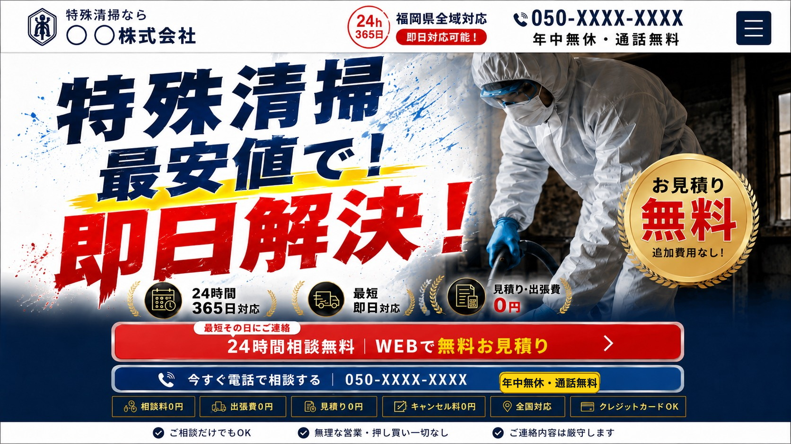
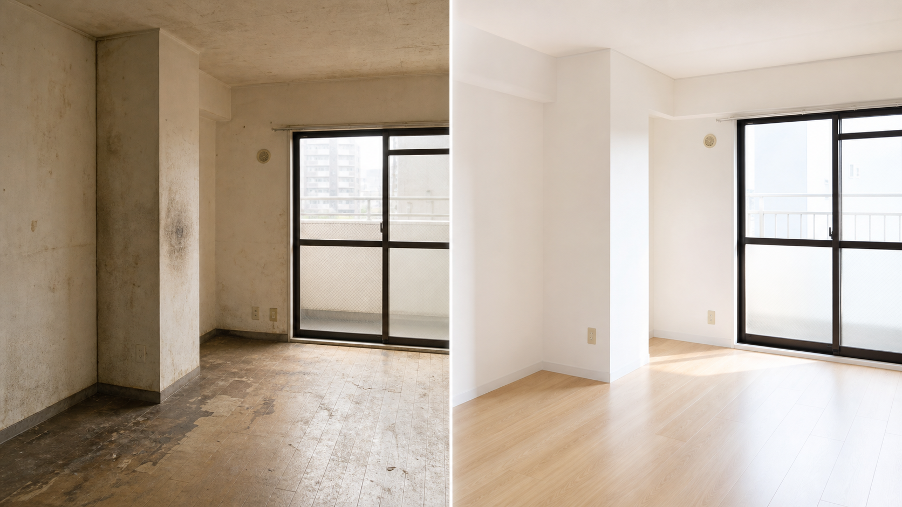
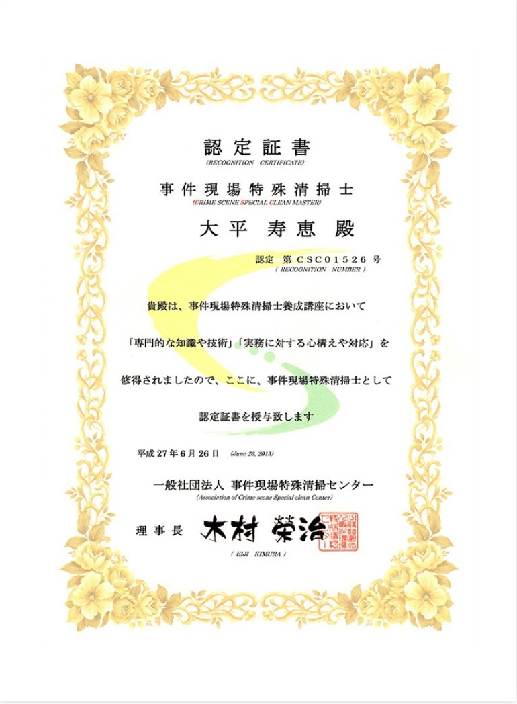
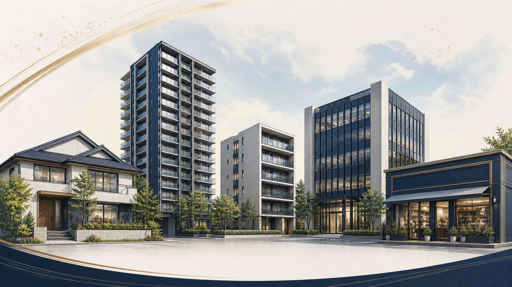
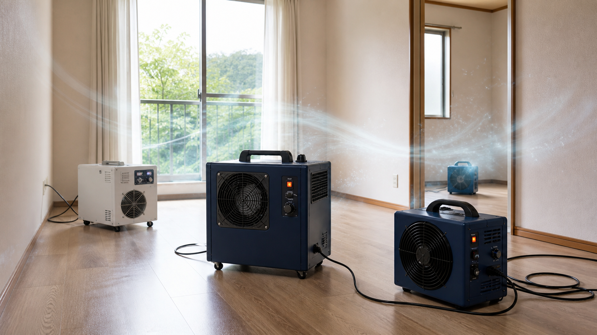

明朗会計｜
お見積り後の追加請求は0円
作業前に必ず内容と金額をご説明し、
ご納得いただいてから着手します。

孤独死・事故・事件現場も
最安値で!
実績・信頼
※自社調べ／2026年6月時点
作業前に必ず内容と金額をご説明し、
ご納得いただいてから着手します。
各地をカバーする加盟ネットワークで、
現場に最も近いスタッフが対応します。
ご近所に気づかれにくい車両・装備で、
静かに作業を進めます。
窓口がひとつなので、
業者を何社も探す手間がいりません。

有資格者が在籍
事件現場特殊清掃士は、一般社団法人 事件現場特殊清掃センターの認定資格です。特殊清掃に必要な知識・技術・心構えを学んだスタッフが、現場ごとの判断を丁寧に行います。

戸建て・マンション・アパートから、オフィス・店舗まで。原状回復や管理会社様の再募集を見据えた仕上がりまで一括で整えます。

対応できること
他社で「対応できない」と断られた現場も、
まずはお聞かせください。
状況を伺ったうえで、
できること・費用・期間を正直にお伝えします。

病死・孤独死・事故・事件現場の清掃
体液・血液の撤去、殺菌・消毒
しみついたニオイの除去
発生状況に応じた駆除と再発抑制
遺品整理・残置物撤去
内装リフォームまで一括対応
火災後のすす落とし・水害後の清掃・除湿

よくある不安

A金額にご納得いただく前に
作業を始めることは一切ありません。
ご相談だけで終えていただいて構いません。
A最初のお見積りで金額を確定します。
作業中の追加請求は0円です。
A接客マナー研修を受けたスタッフが伺います。
近隣に配慮し、頼まれていない作業を
勝手に行うこともありません。
不安をすべて解消してから、安心してお任せいただける——
それが私たちの目指す特殊清掃です。
ご依頼の流れ

状況をお聞かせください。
言葉にしづらければ、
分かる範囲で大丈夫です。
最寄りの加盟スタッフが伺い、
内容と金額をその場でご説明します。
金額にご同意いただいてから着手。
各種クレジットカードもご利用いただけます。
法人様は後日請求にも対応可能です。
現金 / クレジットカード（JCB・VISA・Mastercard・AMEX・DC）
法人後日請求
お客様の声
※公開時は、実際のお客様から取材・掲載許諾を得た声に差し替えてください。特殊清掃は機微情報のため、匿名・地域ぼかし・許諾が必須です。
全国47都道府県／24時間365日受付／加盟スタッフが最寄りから出動
無料相談
時間が経つほど、ニオイ・害虫・原状回復の負担は大きくなります。
24時間365日、最短その日に。
費用は最初にすべて確定します。